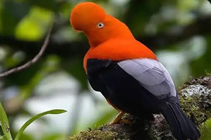
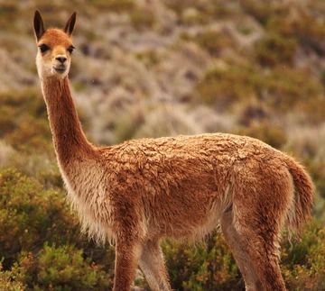
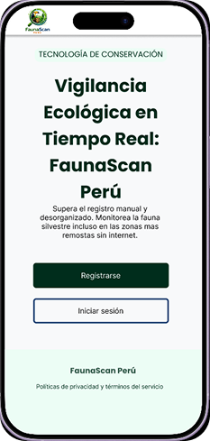

Modo Offline
Permite registrar datos offline y sincroniza automáticamente al volver la conexión. Ideal para el trabajo continuo en la Amazonía.

Supera el registro manual y desorganizado. Monitorea la fauna silvestre incluso en las zonas más remotas sin internet.

Unimos innovación digital y trabajo en campo para cuidar la fauna.
Permite registrar datos offline y sincroniza automáticamente al volver la conexión. Ideal para el trabajo continuo en la Amazonía.

Identificación de especies en tiempo real mediante visión por computadora optimizada para equipos móviles.

Notificaciones rápidas de amenazas detectadas o hallazgos científicos.
Visualización de mapas dinámicos con localizadores de registros cercanos a tu área.
Optimizado para registrar datos en segundos, disminuyendo la carga de trabajo.
Validación automática y geolocalización de alta precisión incorporada en cada registro.
Interfaz de alto contraste bajo la luz directa del sol y botones de gran tamaño.
FaunaScan Perú está disponible para iOS y Android, desarrollado específicamente para resistir las condiciones extremas de los ecosistemas del Perú.
